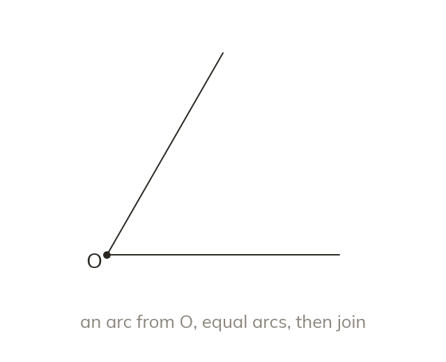
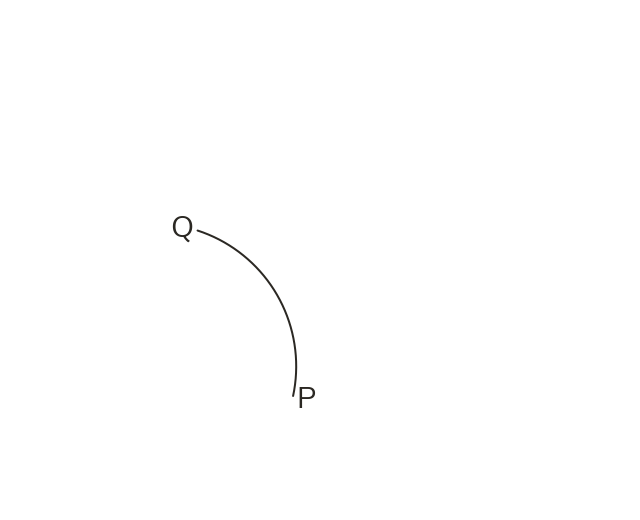
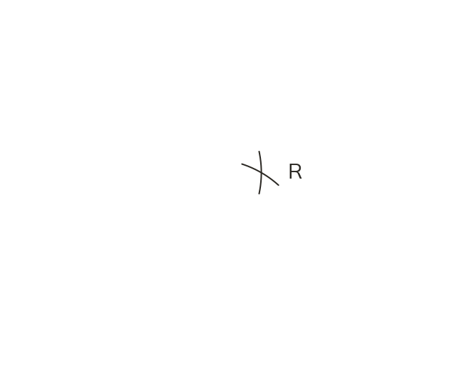
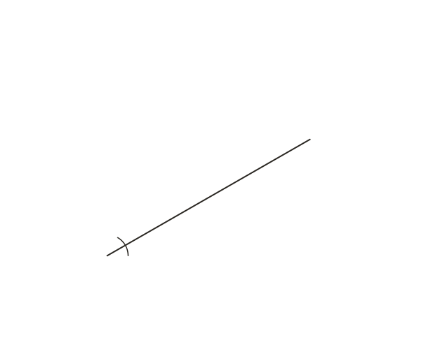

Arcs, then join to the vertex
Draw an arc from the vertex across both arms. Draw equal arcs from those two crossings to meet inside. Join the vertex to that meeting point.
An arc from the vertex crosses both arms, and equal arcs from those two crossings meet inside the angle. The line from the vertex through that meeting point is the angle bisector.The two crossings, P and Q, are the same distance from the vertex. Keep one width for the arcs from P and Q; they cross at R. The line OR splits the angle into two equal angles, and no protractor is needed.